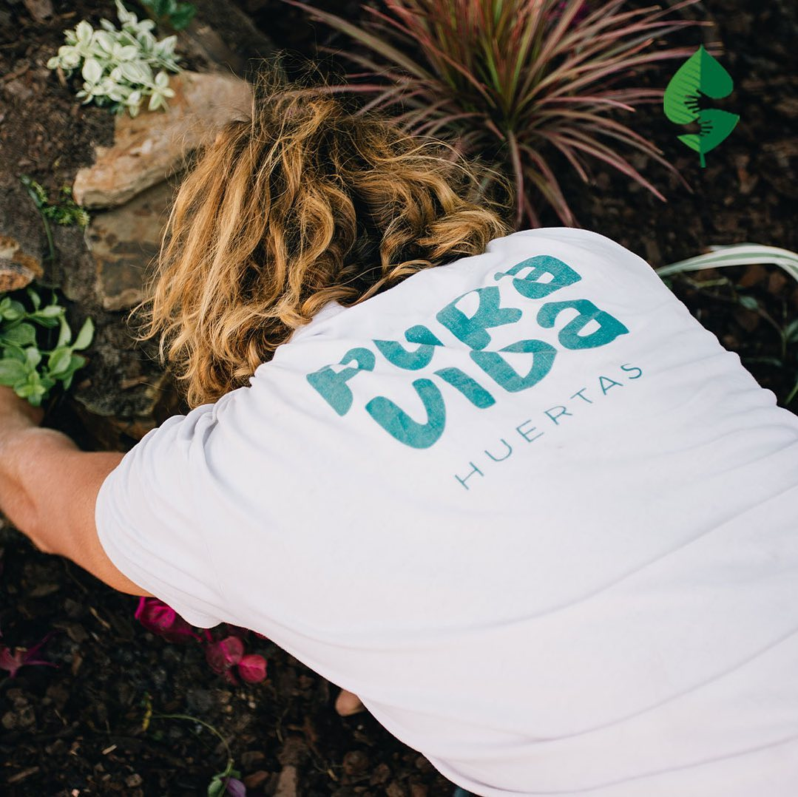
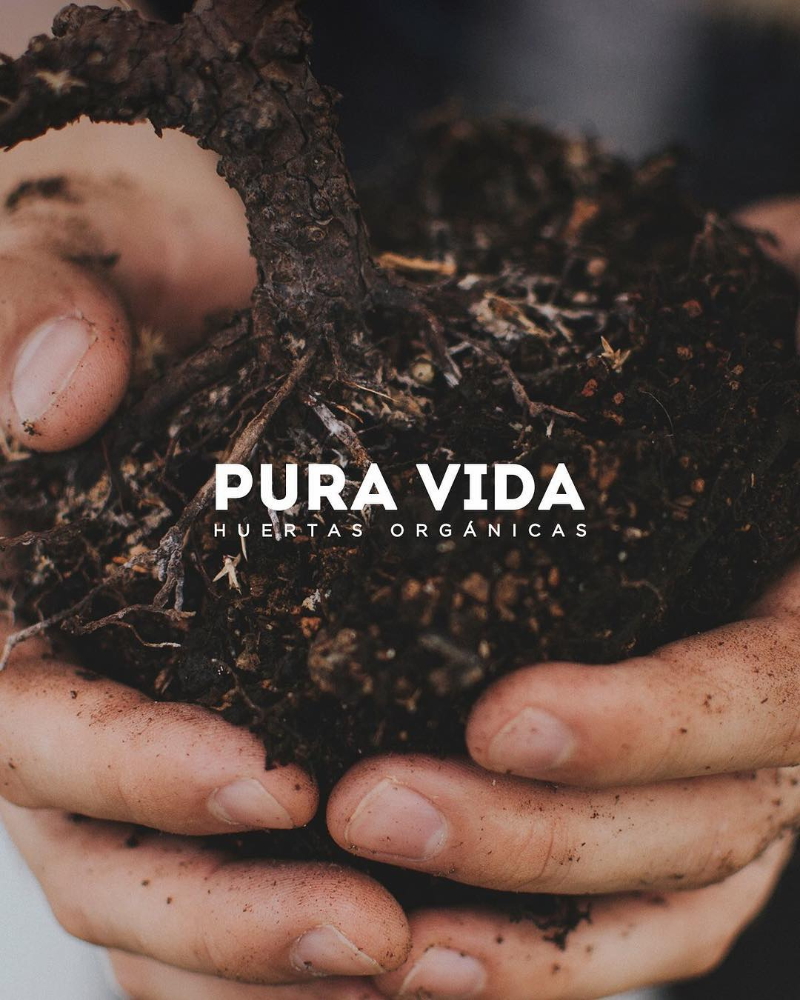
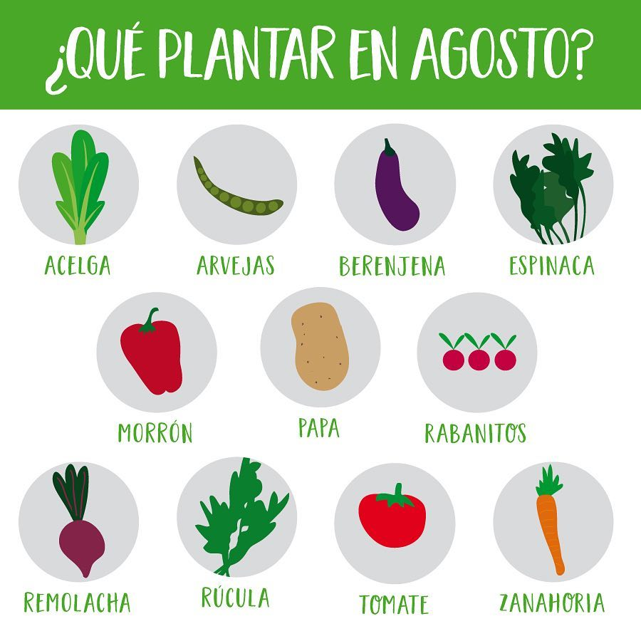
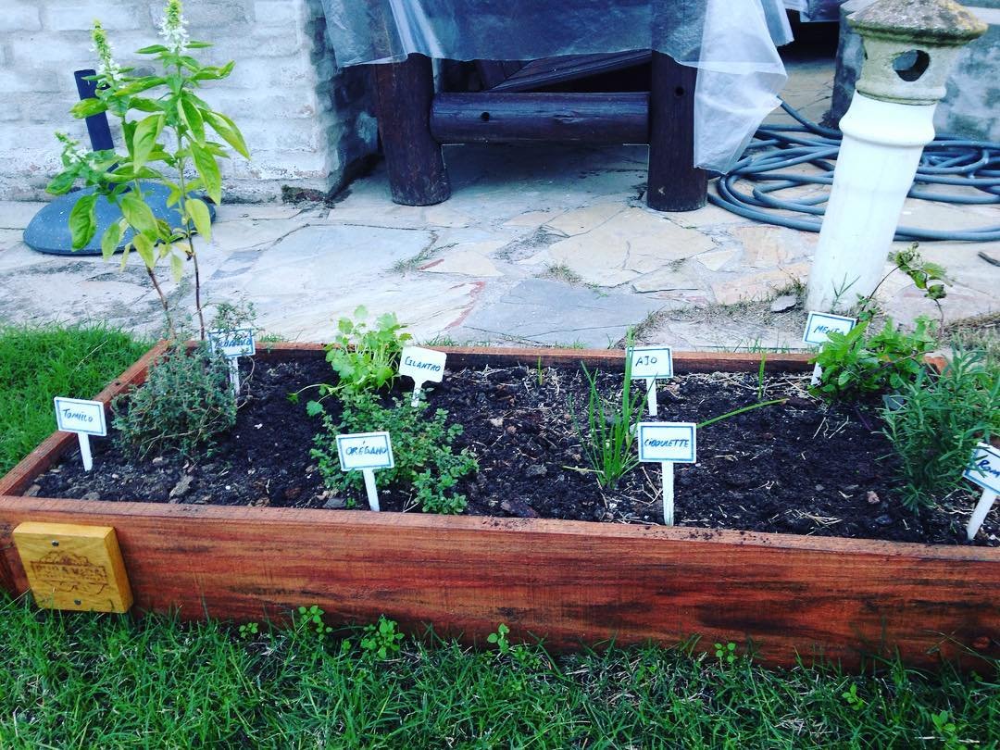

Bienvenidos a Pura Vida Huertas.
Donde encontrarás la mejor forma de decorar tus espacios.






Empezá un camino saludable. Aliméntate consciente.
Estar en contacto directo con las plantas ayuda a liberar el estrés y estimula la conexión con el medio ambiente. Tener una huerta orgánica en casa garantiza que la familia tenga acceso a alimentos saludables y no hace falta tener espacios grandes para cultivarla.